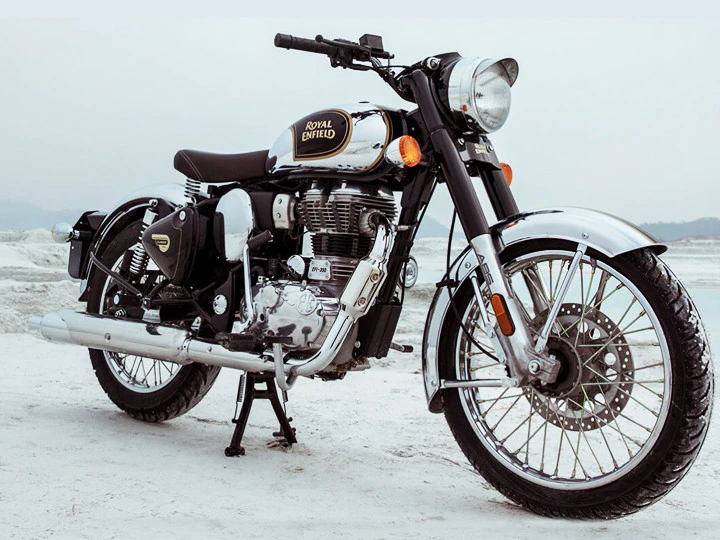

Vinod Dasari, CEO of Royal Enfield, in a recent interview with Economic Times, revealed the company’s expansion plans following the second wave of Covid-19. Dasari goes on to elaborate on the company’s vision for the next five years and how the business strategy will help it gain more market share not only domestically but internationally as well. Earlier, Eicher would post 30 percent-plus sales margins which have now dropped down to 20 percent. The company says this is due to rising commodity costs and newer models having lower margins.